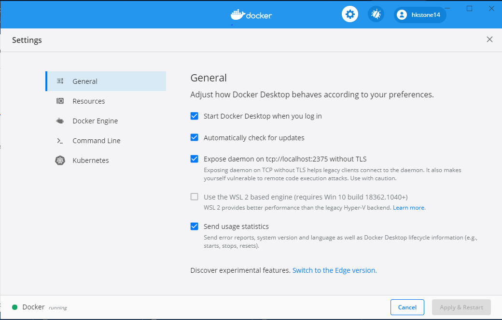
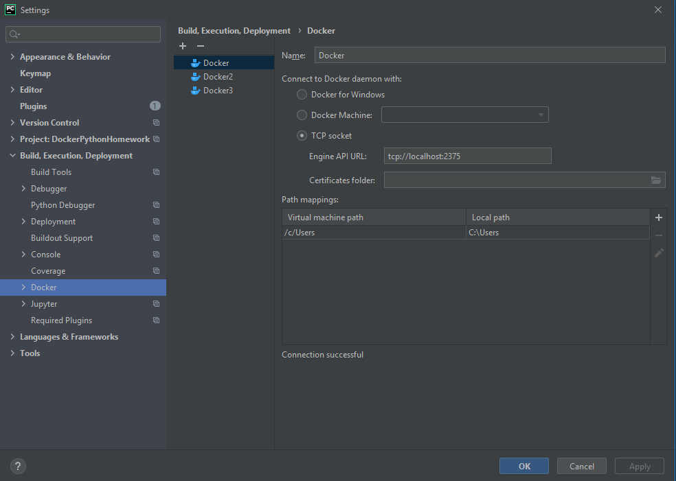
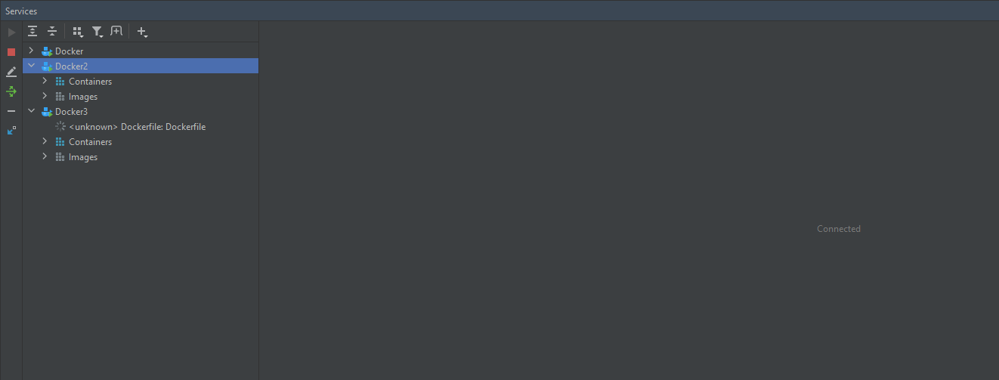
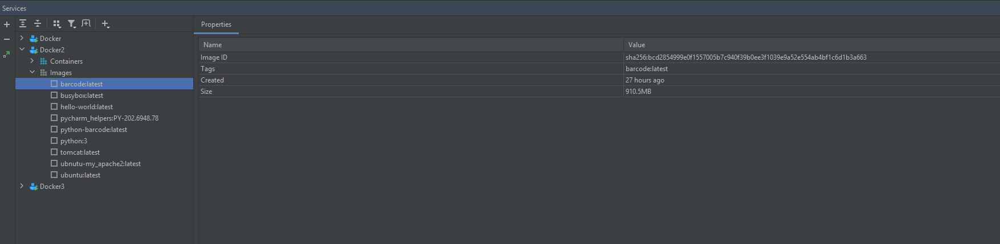

Connect Docker with Pycharm
1. Install and run Docker
Basic requirement is we must have docker installed and running as well as Pycharm installed. For more information see Docker documentation.
2. Ensure you have a stable internet connection.
To operate with Docker you need the busybox image be available on your machine. Ensure that you have a stable Internet connection, so that PyCharm can download and run busybox:latest. Once you have successfully configured Docker, you can go offline.
3. Docker settings for TCP
If you are using Docker for Windows, enable connection to Docker via the TCP protocol: Right-click the Docker icon Docker icon on the Notification bar on the Notification bar, select Settings from the context menu, and then select the Expose daemon on tcp://localhost:2375 without TLS checkbox in the General section of your system Docker settings. 
4. Configure the Docker daemon connection settings
- In the Settings/Preferences dialog Ctrl+Alt+S, select Build, Execution, Deployment | Docker
- Click The Add button to add a Docker configuration and specify how to connect to the Docker daemon.
The connection settings depend on your Docker version and operating system. For more information, see Docker configuration.
The Connection successful message should appear at the bottom of the dialog.

5. Connect to Docker daemon
The configured Docker connection should appear in the Services tool window (View | Tool Windows | Services or Alt+8). Select the Docker node Docker node, and click The Connect button, or select Connect from the context menu. The Services tool window (View | Tool Windows | Services or Alt+8) enables you to pull and push images, create and run containers, manage Docker Compose, and so on. As with other tool windows, you can start typing the name of an image or container to highlight the matching items. 